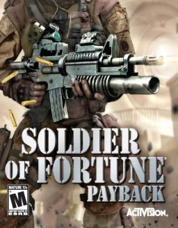

Soldier of Fortune game gets shot down by censors



Famous for its signature over-the-top violence and gory mayhem, another installment of the Soldier of Fortune franchise is on the way but it is doubtful Australian audiences will get to see it: it’s been banned from sale by our classification board. Soldier of Fortune: Pay Back would have allowed you to blow off the limbs of your opponents using high-tech weaponry in more detail than ever before, but the classification board has deemed that the frequent high impact violence makes the game unsuitable for those aged under 18 years.
“Successfully shooting an opponent results in the depiction of blood spray,” the board said in its report on the decision. “When the enemy is shot from close range, the blood spray is substantial, especially when a high-caliber weapon is used, and blood splatters onto the ground and walls in the environment.
“The player may target various limbs of the opponents and this can result in the limb being dismembered. Large amounts of blood spray forth from the stump with the opponent sometimes remaining alive before eventually dying from the wounds.”
Rub it in why don’t ya! Australia is one of the few countries in the western world that does not have an R18+ rating for games, meaning games that do not meet the MA15+ standard are simply banned from sale. This is in spite of the fact that the majority of local gamers are aged over 18 and the average gamer is 28 years old.
So is this draconian censorship that’s well out of date with contemporary culture, or just a legitimate attempt to avoid breeding a future generation of psychopaths? You be the judge.
Check what you’ll be missing out on in the clip below. Ultra violence ahoy!